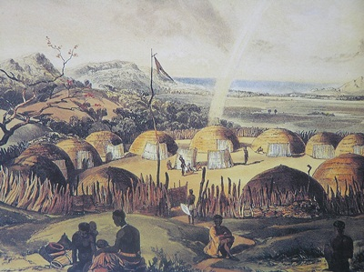

Acemoglu & Robinson in their book The Narrow Corridor use Tiv people as an example of a stateless society.
The statelessness among Tiv was achieved by penalizing or eliminating those who grew successful or powerful enough to become an eventual condensation point for creation of a state. The traditional mechanism for doing so was accusing such people of whichcraft.
This, on one hand, left Tiv without the state and the associated oppression, but, on the other hand, kept them dirt-poor.
That sounds all right on the theoretical level, but what made me really visualize the process was a story about how Shaka Zulu, the builder of the Zulu Kingdom, broke the power of stateless elments in the traditional Zulu society.
When a hammerhead crane flew over his kraal and a porcupine wandered into it, when a crow perched on a fence and began to utter human words he summoned a team of which doctors led by a woman called Nobela:
The Zulus were lined up and Nobela and here associates began "smelling out" the witches who had brought on the evil omens. They picked on prosperous people. One had grown rich through frugality. Another had put cattle manure on his lands as fertilizer, producing a bountiful harvest much greater than his neighbors'. Yet another was a fine stock breeder who had picked the best bulls and taken great care of his stock and as a result had seen a prodigious expansion of his herds.
Shaka took offence, accused the which doctors of false accusations and demanded that two of them must die in compensation. The witch doctors panicked and asked Shaka for protection. He agreed, conditional on that they "won't cheat any more". That way he broke the power of the institution of which doctors.

Zulu kraal.
Another interesting data point about stateless societies is this paper by Lowes, Nunn, Robinson and Weigel (yes, the same Robinson as in The Narrow Corridor book).
In turns out that in Congo there is a set of tribes which are ethnically and culturally pretty homogenous, except that while all of them are historically stateless, one tribe managed to establish a state. The researchers made the people from this area play different economic games and find out that people with a state are less cooperatve than stateless people.
This is a single study and may eventually prove to be non-reproducible, but do have a look at the paper: The methodology is pretty rigorous and the experiments are cleverly devised. Moreover, I am inclined to believe the results just because how genuinely confused the researchers seem to be. (They have done the experiment with the expectation that people with the state will be more cooperative.)
The above has challenged my implicit assumption that stateless societies are in the permanent Hobbesian "warre". That they are, basically, failed states.
But from the above it looks like that stateless societies aren't kept around by the failure to coordinate. In fact, they survive by actively cooperating to prevent the hierarchical structures to emerge. From that point of view, it's rather the state that is the result of coordination failure. For whatever reason the traditional mechanisms of coordination suddenly break and the resulting societal collapse is what we refer to as a "state".
In should be said that given how oppesive many early states have been it's hard to blame the Tiv for wanting to avoid it. The approach, interstingly, proved useful also in the collonial era. From wikipedia:
These socio-political arrangements caused great frustration to British attempts to incorporate the population into Colonial Nigeria and establish an administration on the lower Benue. The strategy of indirect rule, which the British felt to be highly successful in regards to ruling over the Hausa and Fulani populations in Northern Nigeria, was ineffective in a segmentary society like the Tiv. Colonial officers tried various approaches to administration, such as putting the Tiv under the control of the nearby Jukun, and trying to exert control through the councils of elders ("Jir Tamen"); these met with little success.
Now, this may be just a matter of semantics, but I wonder whether we could possibly interpret the results of Lowes & al. study showing that stateless people are more cooperative from this perspective: In the beginning people are behaving fair and cooperating with each other to punish anyone who tries to get an unfair advantage or even exercise power over the others. But then suddenly the society breaks, some people get more powerful, more rich, more oppresive. Others are left behind. It may or may not be that people were often starving before and now everyone is better off, but in either case the sense of fairness is gone. In the new dog-eat-dog society there are no rules. Everyone fights for himself and there's no shame in behaving in an anti-social way.
December 27th, 2021